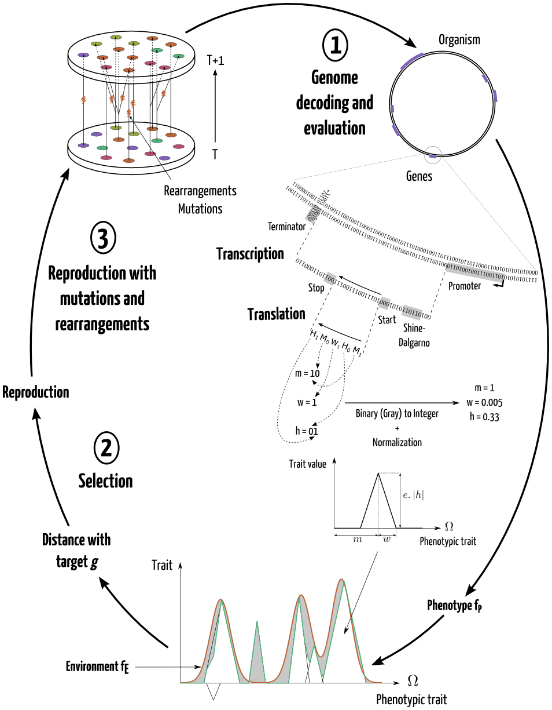

Natural ecosystems undergo different levels of environmental perturbations from seasonal fluctuations to less frequent natural disasters and global changes. These different levels impact differently ecosystems, their organisms and adaptive ability. Here, we focus on stochastic environmental fluctuations and their effect on genome evolution. In bacterial genomes, there is some empirical evidence for a correlation between the modularity of the metabolic network and environmental variability (Parter et al., 2007). Moreover, theoretical studies suggest that temporal variability of the environment can impact genome structure (Bentkowski et al., 2015), modularity (Lipson et al., 2002), network structure (Kashtan and Alon, 2005), evolution speed (Kashtan et al., 2007) and evolvability (Earl and Deem, 2004; Crombach and Hogeweg, 2008). It was also predicted that with greater variability of the environment, genomes should have more genes (Bentkowski et al., 2015).
Most of these studies rely on abstract or population genetic models of evolution, without explicitly representing the genome sequence of each individual. A few other studies (Crombach and Hogeweg, 2008; Bentkowski et al., 2015) use individual-based evolutionary models where each individual has genes, but non coding regions are not taken into account. Non coding DNA, even when it has no direct impact on the phenotype, is a source of variability through mutations and rearrangements, possibly increasing evolvability (Knibbe et al., 2007). This ability to generate adaptive genetic diversity (evolvability) is important to face environmental changes (Crombach and Hogeweg, 2008). Thus non coding DNA is an important factor to take into account to study the links between temporal environmental variability, evolution of evolvability and evolution of genome organization.
Here, we used Aevol, an individual-based evolutionary model (Batut et al., 2013; Knibbe et al., 2007), to investigate the impact of environmental variation speed and amplitude on genome organization and evolvability. Our simulations show that evolved genome size and gene density strongly depend on the speed of environmental fluctuations. As discussed below, this behavior can be explained by indirect selection for evolvability when the speed is low to moderate, and by indirect selection for robustness when the speed is so high that the selection becomes stabilizing rather than directional.
Material and methods
Aevol (Batut et al., 2013; Knibbe et al., 2007) model simulates the evolution of a population of N artificial organisms using a variation-reproduction cycle. The population has a constant size over time and is completely renewed at each time step.
Each artificial organism owns a circular, double-stranded chromosome. The chromosome is a string of binary nucleotides, 0 being complementary to 1. This chromosome contains coding sequences (genes) separated by non-coding regions. Each coding sequence is detected by a transcription-translation process and decoded into a “protein” that contributes positively or negatively to a subset of abstract phenotypic characters. Adaptation is then measured by comparing the net values of the phenotypic characters to target values.
At each time step, N new individuals are created by reproducing preferentially the fittest individuals from the parental generation. Afterwards, all individuals from the parental population die. In the experiments presented here, reproduction was strictly asexual.
When a chromosome is replicated, it can undergo point mutations, small insertions and small deletions, but also large chromosomal rearrangements: duplications, large deletions, inversions, translocations. Thus mutations can modify existing genes, but also create new genes, delete some existing genes, modify the length of the intergenic regions, modify gene order, etc.

In this model, the environment is indirectly modelled as the set of target values for the characters, i.e. the set of processes needed for an individual to survive. These target values fluctuate over time, according to an autoregressive process of order 1 (an Ohrstein-Uhlenbeck process in discrete time) with parameters sigma and tau, where sigma controls the amplitude of the fluctuations and tau controls the speed at which the values tends to return to their mean.
To estimate the impact of environmental variation on genome organization, simulations were run with 5 different sigma values and 21 different tau values during 300,000 generations. Each (sigma,tau) couple was tested with 5 independent populations.
Results and discussion
For all sigma values, variation speed (inverse of tau) has a non-linear impact on genome structure. Indeed, as variation speed increases, the evolved genome size first increases and then decreases, with a maximum size observed for mild sigma values. Hence the relation of environmental variation speed and genome size is bell-shaped, and it is mostly due to variation in the amount of non-coding bases. Intermediate speeds of environmental fluctuations yield the genomes with the lowest gene densities. This suggests that non-coding DNA could play a role in adapting to environmental fluctuations when these fluctuations occur at intermediate speed.

To investigate this hypothesis, we conducted complementary experiments on a subset of the evolved populations (those with the highest sigma values and 5 different tau values). We removed all the non-coding DNA inside the evolved genomes and let them evolve for 100,000 additional generations. We observed that after a few thousand generations, about as much non-coding DNA was regained as the quantity that was removed. The bell-shaped relation between the amount of non-coding DNA and environmental variation speed was quickly restored.
Variation amplitude (sigma) does not qualitatively change the shape of the relation between tau and genome size. A higher sigma intensifies the relation by making the bell more peaked and shifting the peak towards smaller values of tau.
This relation between the speed of environmental variation and genome size may be driven by evolvability and indirect selection of mutational variability level. Indeed, as spontaneous rates of local mutations and rearrangements are per base, a larger genome undergoes more local mutations and more rearrangements. Changes of genome size can then modulate the number of local mutations and rearrangements. Increasing the fraction of non-coding DNA only marginally impact the mutational variability of point mutations and indels. However, it has been shown that impact of large duplications and large deletions on coding sequences increases as the proportion of non-coding DNA increases (Knibbe et al., 2007; Fischer et al., 2014). When a beneficial local mutation or rearrangement is selected, the genome where the mutation/rearrangement occured and its size are selected. Genome size can then be indirectly selected by “hitchhiking”.
In an environment that fluctuates very slowly, the need for mutational variability is low, hence there is no indirect selective pressure to maintain non-coding DNA, a source of deleterious mutations. If fluctuations occur faster, then more beneficial mutations or rearrangements are needed to adapt. And they are more likely to occur in large genomes, which indirectly selects for genomes with much non-coding DNA. However, above a certain fluctuation speed, the target changes so frequently that beneficial mutations at a given generation are no longer beneficial at next generation. Selection evolves from stabilizing to directional. The phenotype will stabilize on the temporal mean of the target. In these conditions, large genomes are conter-selected: they mutate too much and there is indirect selection for robustness instead of evolvability. This explains the observed genome streamlining in the fast changing environments.
This work shows the strong non-intuitive influence of environmental variability on genome architecture. As environments varying at mild speeds require more phenotypic variability, they promote indirect selection of variability and then genome inflation through the accumulation of non-coding sequences. Indeed, without effet on the phenotype, these non-coding sequences are directly selected. However, they increase global genetic variability and thus help organisms to face environmental variations. On the other hand, in too quickly or too slowly varying environment, genetic variability is more deleterious than beneficial. Non-coding sequences are then washed-out from the genome and genome streamlining is observed.
References
Batut,B. et al. (2013) In silico experimental evolution: a tool to test evolutionary scenarios. BMC Bioinfo, 14, S11.
Bentkowski,P. et al. (2015) A Model of Genome Size Evolution for Prokaryotes in Stable and Fluctuating Environments. Genome Biol Ev, 7, 2344–2351.
Crombach,A. and Hogeweg,P. (2008) Evolution of Evolvability in Gene Regulatory Networks. PLoS Comp Biol, 4, e1000112.
Earl,D.J. and Deem,M.W. (2004) Evolvability is a selectable trait. Proc Nat Aca Sci, 101, 11531–11536.
Fischer,S. et al. (2014) A Model for Genome Size Evolution. Bulletin of Mathematical Biology, 76, 2249–2291.
Kashtan,N. and Alon,U. (2005) Spontaneous evolution of modularity and network motifs. Proceedings of the National Academy of Sciences of the United States of America, 102, 13773–13778.
Kashtan,N. et al. (2007) Varying environments can speed up evolution. Proceedings of the National Academy of Sciences, 104, 13711–13716.
Knibbe,C. et al. (2007) A Long-Term Evolutionary Pressure on the Amount of Noncoding DNA. Mol Biol Evol, 24, 2344–2353.
Lipson,H. et al. (2002) On the origin of modular variation. Evolution, 56, 1549–1556.
Parter,M. et al. (2007) Environmental variability and modularity of bacterial metabolic networks. BMC Evol Biol, 7, 169.